下載Flutter SDK
到 Flutter官網 選擇你的平台
並開始下載 Flutter SDK
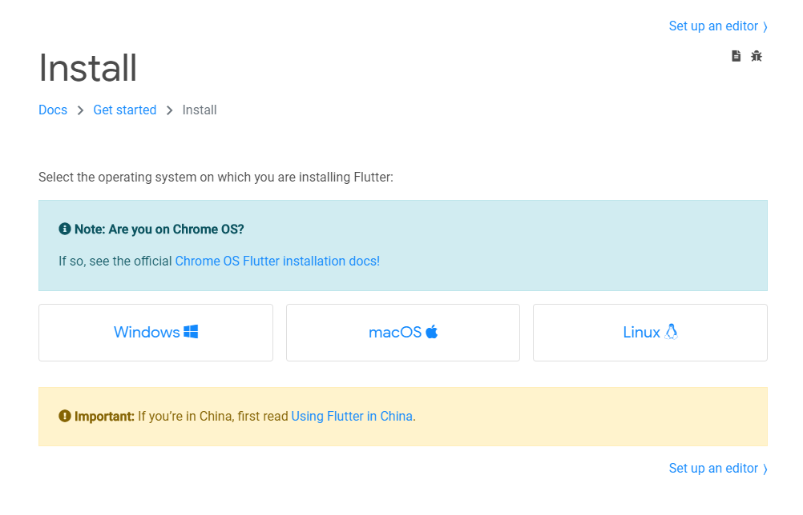
下載好了之後解壓到你要安裝的資料夾
Dart SDK
Flutter 是基於 Dart 語言開發的
所以理論上我們需要 Dart SDK
不過好消息是 Dart SDK 已經綁在 Flutter SDK 裡了，所以無需單獨下載
配置環境變數
這裡新增的路徑一律都指向 bin 資料夾
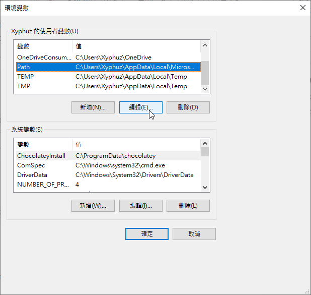
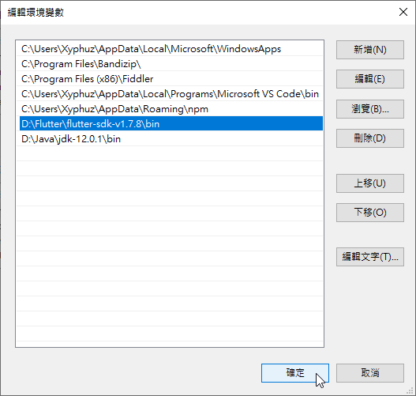
Flutter Doctor
配置環境變數之後隨時可以用這個指令
1 | flutter doctor |
查看是否有那裡沒安裝好或是出問題
安裝JDK
註(2020/12/13更新): Android Studio好像會自帶JDK，所以其實這步驟可以跳過
到甲骨文官網下載你要的JDK版本
下載了之後照著他的指示安裝就可以了
配置環境變數
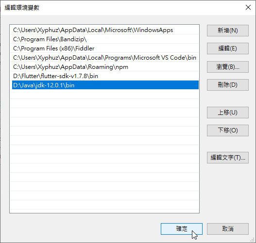
安裝Android Studio
到Android Studio官網下載 Android Studio
之後照著指示安裝
Android SDK
在新版的Android Studio安裝過程中
會提示你要不要裝哦
記得打勾就好(不過我記得預設就是打勾啦)
安裝Android Licenses
輸入以下指令
1 | flutter doctor --android-licenses |
就結束啦~
創建模擬器
這裡要來創建一個AVD虛擬機
也就是在測試時看到的手機畫面
先到這個畫面，找到 Configure 點下去
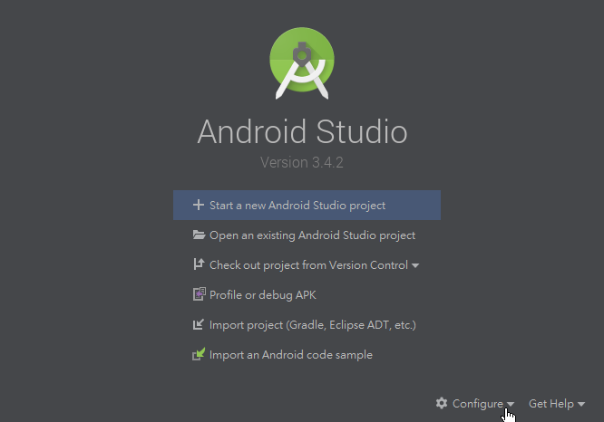
選AVD Manager
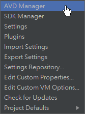
接下來就照著提示創建一台虛擬機吧！
到了按 Finish 之後才是真正完成哦~
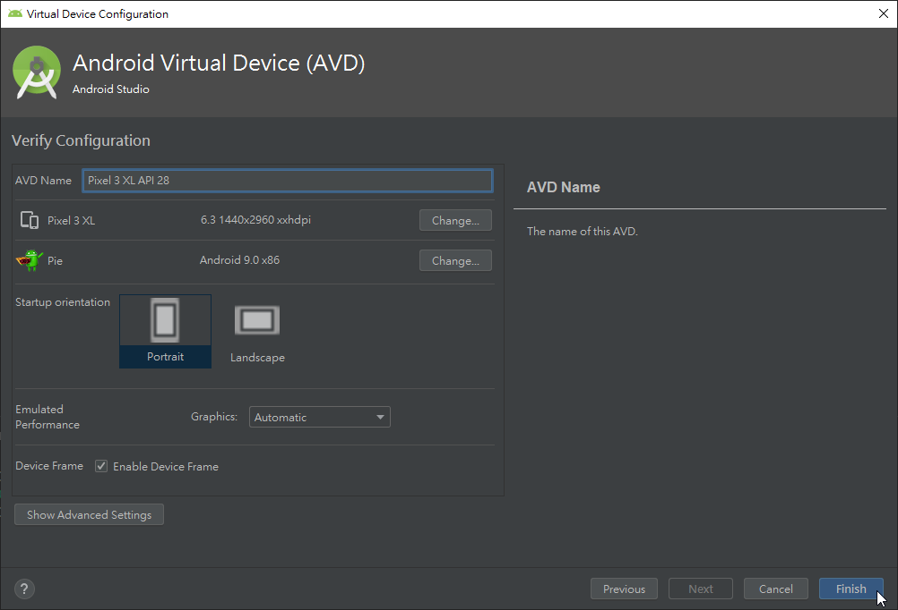
按下 Launch 可以啟動測試看看是否正常運行
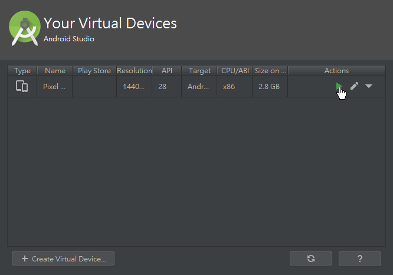
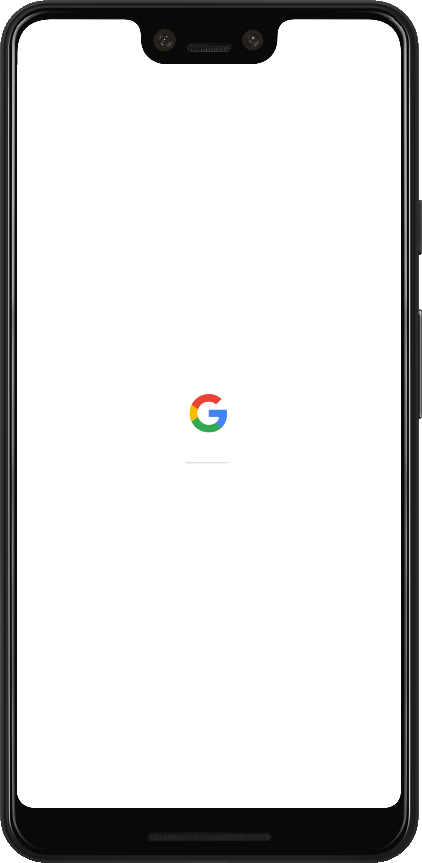
安裝語言外掛
先到這個畫面，找到 Configure 點下去
這次換成 Plugins
搜尋 Flutter(記得要大寫)，然後點安裝
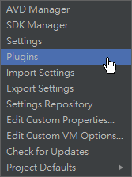
這步他會提示你要連同 Dart 的外掛一起裝，這裡一直按是就好了
裝好之後重開會如圖，這樣就完成啦~
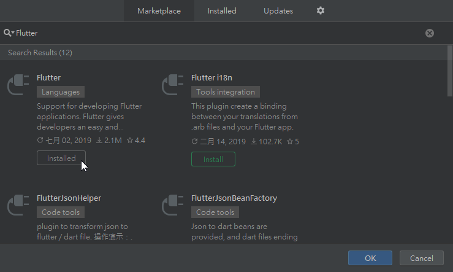
編輯器
這裡可以選擇你要用VS Code編輯，還是Android Studio編輯就好
這裡我是用VS Code
所以來安裝個也來安裝個語言外掛
如圖，Install給他按下去，94簡單
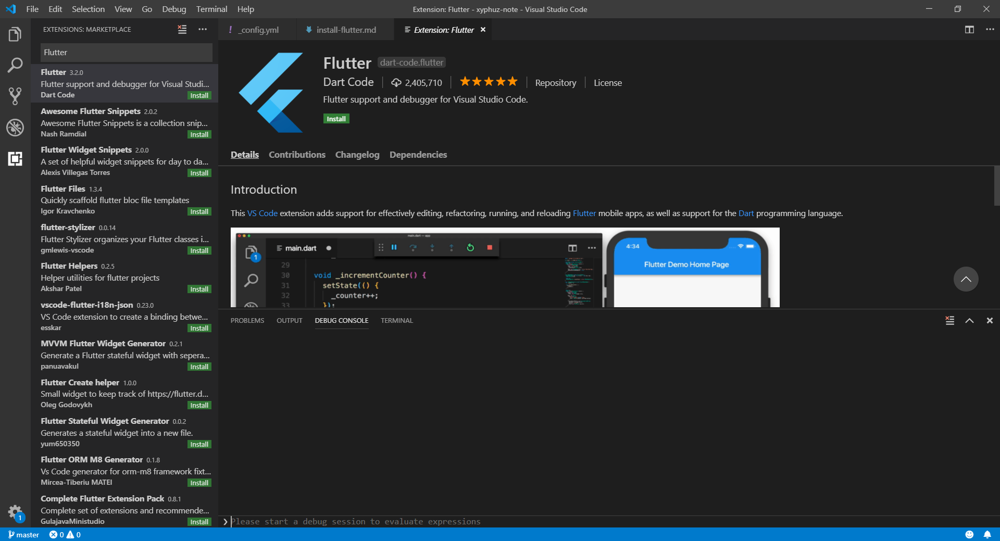
大功告成
如果只剩這個問題的話，代表你成功啦！
1 | [!] Connected device |
只要用USB線插上你的設備(手機端記得開偵錯)
或者是用剛剛建立的AVD虛擬機就可以解決這個問題了~
錯誤排除
有些時候會遇到以下的錯誤情形:
1 | [✓] Android toolchain - develop for Android devices (Android SDK version 30.0.3) |
這時只要執行以下指令應該就沒問題了哦~
1 | flutter channel dev |
註: Android Studio預設安裝路徑在
"C:\Program Files\Android\Android Studio"